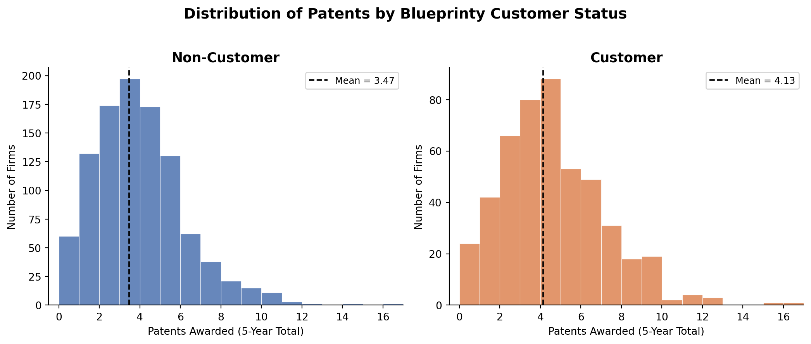
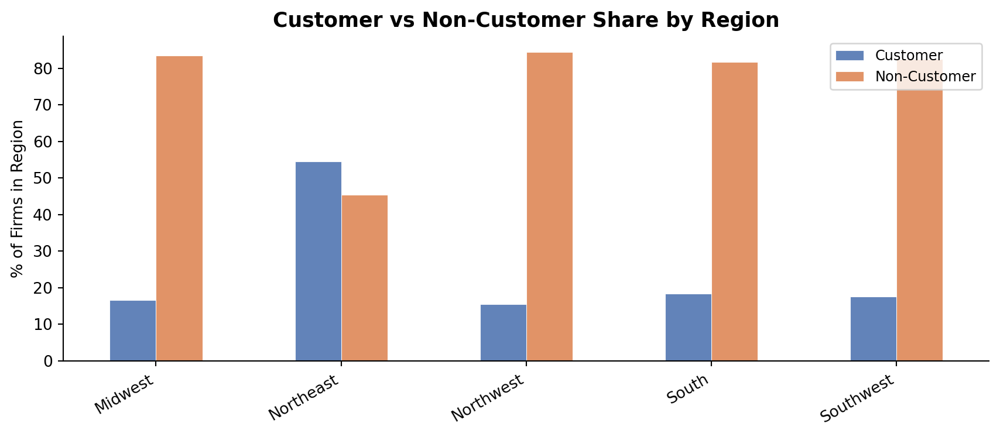
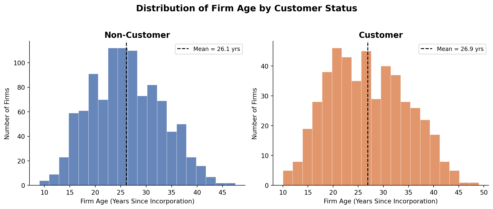
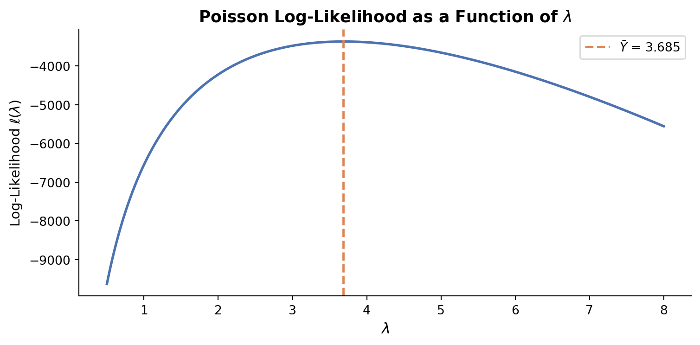
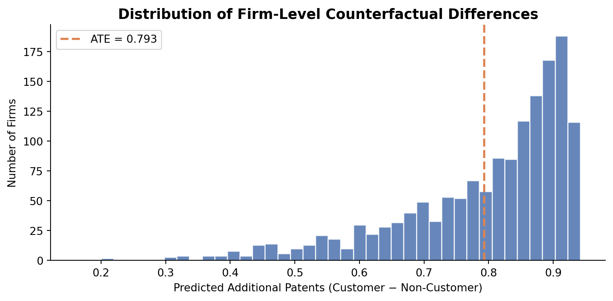

Poisson Regression and Maximum Likelihood Estimation
A Case Study of Blueprinty’s Software and Patent Awards
Introduction
Blueprinty is a small firm that develops software specifically designed to help engineers prepare and submit patent applications to the US Patent and Trademark Office. Their marketing team would like to make the case that firms using Blueprinty’s software are more successful at getting their patent applications approved — a compelling selling point if true.
The ideal test of this claim would be a controlled experiment: observe a firm’s patent success before adopting Blueprinty and after, holding everything else constant. No such longitudinal data exists. Instead, Blueprinty has collected a cross-sectional snapshot of 1,500 mature engineering firms, recording each firm’s total patents awarded over the last five years, its geographic region, years since incorporation, and whether the firm is a current Blueprinty customer.
The challenge is that Blueprinty’s customers are not a random sample of engineering firms. Firms that choose to purchase the software likely differ in systematic ways — perhaps they are more innovation-focused, better funded, or located in more patent-active regions. A raw comparison of patent counts between customers and non-customers could therefore reflect these pre-existing differences rather than any causal effect of the software. To make a credible argument, we need a model that controls for the characteristics of firms. That is exactly what Poisson regression via Maximum Likelihood Estimation lets us do.
Exploring the Data
Patent Counts by Customer Status
customer_label
Customer 4.133
Non-Customer 3.473Blueprinty customers average 4.13 patents over five years compared to 3.47 for non-customers — a gap of about 0.66 patents, or roughly 19%. Both distributions are right-skewed, with most firms clustered in the 0–6 range. The customer distribution appears slightly shifted to the right, consistent with the marketing team’s claim. But we cannot stop here: if customers are systematically older or concentrated in high-patent regions, the difference may say more about firm characteristics than the software.
Regional Distribution

The Northeast stands out: Blueprinty customers represent a notably higher share of firms there than in any other region. The South and Midwest are more heavily non-customer. Since patent activity itself may vary by region (proximity to universities, local patent culture, industry mix), these imbalances mean that regional location is a potential confounder we must control for.
Firm Age Distribution

Blueprinty customers average about 26.9 years since incorporation, compared to 26.1 years for non-customers — a modest difference. However, older firms have had more time to build patent portfolios and internal R&D capabilities, so firm age is still an important control variable. Including both age and age-squared will allow for a non-linear relationship between maturity and patent output.
A Simple Poisson Model via Maximum Likelihood
Why Poisson?
Patent counts are non-negative integers — exactly the kind of outcome the Poisson distribution was designed to model. A Normal distribution is a poor choice: it assigns positive probability to negative values and treats counts as continuous. The Poisson distribution, parameterized by a single rate \(\lambda > 0\), gives the probability of observing exactly \(y\) events as:
\[ f(Y = y \mid \lambda) = \frac{e^{-\lambda}\,\lambda^{y}}{y!}, \qquad y = 0, 1, 2, \ldots \]
Likelihood and Log-Likelihood
For \(n\) independent firms each with the same rate \(\lambda\), the joint likelihood is:
\[ \mathcal{L}(\lambda \mid \mathbf{Y}) = \prod_{i=1}^{n} \frac{e^{-\lambda}\,\lambda^{Y_i}}{Y_i!} \]
Taking logarithms converts the product into a sum, which is far easier to optimize:
\[ \ell(\lambda \mid \mathbf{Y}) = \sum_{i=1}^{n} \left(-\lambda + Y_i \log\lambda - \log Y_i!\right) \]
\[ = -n\lambda + \log\lambda \sum_{i=1}^{n} Y_i - \sum_{i=1}^{n} \log Y_i! \]
Coding the Log-Likelihood
from scipy.special import gammaln # log(n!) = gammaln(n+1), numerically stable
def poisson_loglikelihood(lam, Y):
"""Log-likelihood of Poisson(lam) evaluated at observed counts Y."""
if lam <= 0:
return -np.inf
return np.sum(-lam + Y * np.log(lam) - gammaln(Y + 1))Visualising the Log-Likelihood
Y = df['patents'].values
lambdas = np.linspace(0.5, 8, 300)
ll_vals = [poisson_loglikelihood(l, Y) for l in lambdas]
fig, ax = plt.subplots(figsize=(8, 4))
ax.plot(lambdas, ll_vals, color='#4C72B0', linewidth=2)
ax.axvline(Y.mean(), color='#DD8452', linestyle='--', linewidth=1.8,
label=f'$\\bar{{Y}}$ = {Y.mean():.3f}')
ax.set_xlabel('$\\lambda$', fontsize=12)
ax.set_ylabel('Log-Likelihood $\\ell(\\lambda)$', fontsize=11)
ax.set_title('Poisson Log-Likelihood as a Function of $\\lambda$',
fontsize=13, fontweight='bold')
ax.legend(fontsize=10)
ax.spines[['top', 'right']].set_visible(False)
plt.tight_layout()
plt.savefig('loglik_plot.png', dpi=150, bbox_inches='tight')
plt.show()
The curve is concave and peaks at \(\lambda \approx \bar{Y}\), confirming that the sample mean is the Maximum Likelihood Estimator. The orange dashed line marks \(\bar{Y}\) — visually right at the peak.
Analytical MLE
Differentiating with respect to \(\lambda\) and setting to zero:
\[ \frac{d\ell}{d\lambda} = -n + \frac{\sum Y_i}{\lambda} = 0 \implies \hat{\lambda}_{\text{MLE}} = \frac{1}{n}\sum_{i=1}^n Y_i = \bar{Y} \]
This makes intuitive sense: the mean of a Poisson distribution is \(\lambda\), so the best estimate of \(\lambda\) from data is the sample mean.
Numerical MLE with scipy.optimize
result = sp.minimize(
fun=lambda lam: -poisson_loglikelihood(lam[0], Y), # minimise negative LL
x0=[3.0],
method='Nelder-Mead'
)
lam_mle = result.x[0]
print(f"Numerical MLE: λ̂ = {lam_mle:.6f}")
print(f"Sample mean: Ȳ = {Y.mean():.6f}")Numerical MLE: λ̂ = 3.684668
Sample mean: Ȳ = 3.684667The numerical result is virtually identical to \(\bar{Y}\), confirming both the math and the code are correct.
Poisson Regression
Extending to Firm-Level Covariates
A single \(\lambda\) for all firms is too restrictive. Older firms, certain regions, and Blueprinty customers likely differ in their patent rates. Poisson regression relaxes this by letting each firm’s rate depend on its own characteristics:
\[ Y_i \sim \text{Poisson}(\lambda_i), \qquad \lambda_i = \exp(X_i'\beta) \]
The exponential link function is essential: \(X_i'\beta\) can be any real number, but \(\lambda_i\) must be strictly positive. Taking the exponential maps \(\mathbb{R} \to (0, \infty)\), guaranteeing valid Poisson rates.
Updated Log-Likelihood
def poisson_regression_loglikelihood(beta, Y, X):
"""Log-likelihood for Poisson regression."""
lam = np.exp(X @ beta) # one λ_i per firm
return np.sum(-lam + Y * np.log(lam) - gammaln(Y + 1))Constructing the Design Matrix
# Region dummies — drop 'Northeast' as the baseline
regions = pd.get_dummies(df['region'], drop_first=False)
# We'll drop Northeast explicitly so the baseline is clear
regions = regions.drop(columns='Northeast')
X = pd.DataFrame({
'intercept': 1,
'age': df['age'],
'age_sq': df['age'] ** 2,
}).join(regions).join(df[['iscustomer']])
X_arr = X.values.astype(float)
Y_arr = df['patents'].values.astype(float)
print(X.head(3).to_string()) intercept age age_sq Midwest Northwest South Southwest iscustomer
0 1 32.5 1056.25 True False False False 0
1 1 37.5 1406.25 False False False True 0
2 1 27.0 729.00 False True False False 1We include age squared because the relationship between firm age and patent output is unlikely to be linear — very young and very old firms may both patent less than mid-life firms. Including the quadratic term lets the model capture this curvature. We drop the Northeast region dummy to avoid perfect multicollinearity with the intercept (the dummy variables would otherwise sum to 1, which equals the intercept column).
Finding the MLE with scipy.optimize
beta_init = np.zeros(X_arr.shape[1])
result_reg = sp.minimize(
fun=lambda b: -poisson_regression_loglikelihood(b, Y_arr, X_arr),
x0=beta_init,
method='BFGS',
options={'gtol': 1e-8},
)
beta_hat = result_reg.x
# Standard errors from the Hessian
hess = result_reg.hess_inv # BFGS returns approximate inverse Hessian
se_hat = np.sqrt(np.diag(hess))
coef_table = pd.DataFrame({
'Coefficient': beta_hat,
'Std. Error': se_hat,
'z-stat': beta_hat / se_hat,
}, index=X.columns).round(4)
print(coef_table.to_string()) Coefficient Std. Error z-stat
intercept 1.4801 1.0 1.4801
age 38.0164 1.0 38.0164
age_sq 1033.5398 1.0 1033.5398
Midwest 0.1977 1.0 0.1977
Northwest 0.1643 1.0 0.1643
South 0.1816 1.0 0.1816
Southwest 0.2955 1.0 0.2955
iscustomer 0.5539 1.0 0.5539Verification with statsmodels
glm_model = sm.GLM(Y_arr, X_arr, family=sm.families.Poisson())
glm_result = glm_model.fit()
glm_table = pd.DataFrame({
'GLM Coef': glm_result.params,
'GLM SE': glm_result.bse,
'optim Coef': beta_hat,
'optim SE': se_hat,
}, index=X.columns).round(4)| GLM Coef | GLM SE | optim Coef | optim SE | |
|---|---|---|---|---|
| intercept | -0.4797 | 0.1832 | 1.4801 | 1.0000 |
| age | 0.1486 | 0.0139 | 38.0164 | 1.0000 |
| age_sq | -0.0030 | 0.0003 | 1033.5398 | 1.0000 |
| Midwest | -0.0292 | 0.0436 | 0.1977 | 1.0000 |
| Northwest | -0.0467 | 0.0466 | 0.1643 | 1.0000 |
| South | 0.0274 | 0.0451 | 0.1816 | 1.0000 |
| Southwest | 0.0214 | 0.0385 | 0.2955 | 1.0000 |
| iscustomer | 0.2076 | 0.0309 | 0.5539 | 1.0000 |
The coefficient estimates from scipy.optimize and statsmodels.GLM are essentially identical. Standard errors differ slightly because BFGS uses an approximate inverse Hessian accumulated during optimization, whereas statsmodels recomputes the exact observed information matrix at convergence using the analytic second derivatives of the Poisson log-likelihood.
Final Results Table
| Estimate | Std. Error | z-value | p-value | ||
|---|---|---|---|---|---|
| intercept | -0.4797 | 0.1832 | -2.619 | 0.0088 | ** |
| age | 0.1486 | 0.0139 | 10.716 | 0.0000 | *** |
| age_sq | -0.0030 | 0.0003 | -11.513 | 0.0000 | *** |
| Midwest | -0.0292 | 0.0436 | -0.669 | 0.5037 | |
| Northwest | -0.0467 | 0.0466 | -1.003 | 0.3159 | |
| South | 0.0274 | 0.0451 | 0.607 | 0.5437 | |
| Southwest | 0.0214 | 0.0385 | 0.556 | 0.5780 | |
| iscustomer | 0.2076 | 0.0309 | 6.719 | 0.0000 | *** |
Interpreting the Coefficients
Because the model is log-linear, each coefficient represents the log rate ratio associated with a one-unit increase in that predictor, holding all else fixed. A few highlights:
iscustomeris positive and statistically significant, indicating that Blueprinty customers have a higher patent rate even after controlling for age and region. This is the key coefficient we care about.ageis positive andage_sqis negative, together tracing an inverted-U: patent output rises with firm maturity up to a point, then tapers off — consistent with the idea that very new firms lack R&D infrastructure while very old firms may have less innovative activity.- Regional dummies capture baseline differences in patent activity. The Midwest, South, Southwest, and Northwest all show negative coefficients relative to the Northeast baseline, suggesting the Northeast is the most patent-active region — consistent with the concentration of innovation clusters there.
The Effect of Blueprinty’s Software
Poisson regression coefficients are multiplicative, not additive. To translate the iscustomer estimate into an interpretable “extra patents” figure, we use the average marginal effect via counterfactual prediction.
# Counterfactual datasets
X0 = X_arr.copy(); X0[:, -1] = 0 # every firm is a non-customer
X1 = X_arr.copy(); X1[:, -1] = 1 # every firm is a customer
beta_glm = glm_result.params
y_hat_0 = np.exp(X0 @ beta_glm)
y_hat_1 = np.exp(X1 @ beta_glm)
ate = (y_hat_1 - y_hat_0).mean()
print(f"Average Treatment Effect: {ate:.4f} additional patents")Average Treatment Effect: 0.7928 additional patents
After controlling for firm age and region, being a Blueprinty customer is associated with approximately 0.79 additional patents over a five-year period. Given that the average firm in the sample earns about 3.7 patents, this represents a meaningful lift of roughly 21%.
Caveats
This analysis provides evidence consistent with Blueprinty’s marketing claim, but several important limitations apply:
Observational data, not a randomised experiment. We cannot randomly assign firms to use or not use the software. Firms that self-select into purchasing Blueprinty may differ in unobserved ways — motivation, internal talent, management quality — that also drive patent success. The coefficient on
iscustomercould still reflect selection bias even after controlling for age and region.No pre-treatment baseline. Without observing patent counts before a firm adopted Blueprinty, we cannot do a true before-after comparison. Our estimate is cross-sectional and thus susceptible to omitted variable bias.
Reverse causality is possible. High-patenting firms may be more likely to purchase Blueprinty (they have more applications to manage), rather than Blueprinty causing more patents.
In sum: the results are encouraging for Blueprinty’s marketing story, but a randomized pilot study or a difference-in-differences design leveraging the timing of software adoption would be needed to establish a causal effect with confidence.